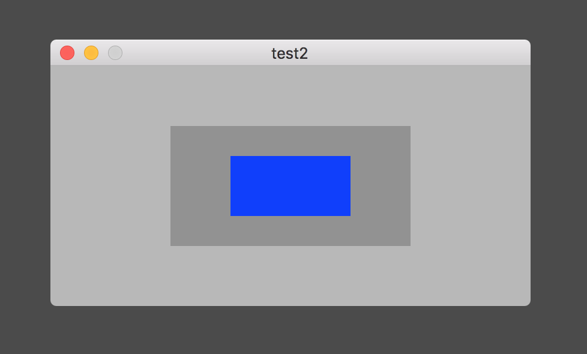

マウスのクリックの位置を取得する

マウスのクリックイベントを補足しクリックされた点の座標を求める方法は二つある。一つは、NSViewクラスのmouseDownメソッドをオーバーライドする方法、もう一つは、NSEventクラスのマウスイベントを監視する機能によるものである。
NSViewクラスのmouseDownメソッドをオーバーライドする
引数のNSEventオブジェクトのlocationInWindowプロパティにはマウスをクリックした点の座標が渡ってくる。これはウィンドウ（厳密にはコンテントビューの座標）を基準にしたものである。
点の座標を別のビューを基準としたものに変えるときはNSViewクラスのconvertメソッド使用する。本例では自身のビューを基準にしている。convertメソッドは toを引数にするものと fromを引数とするものがある。要は主語が異なるだけで、以下の例では両者は同じ結果となる。
マウスイベントを監視する
マウスイベントを監視する方法は、NSEventクラスのaddLocalMonitorForEventsメソッドまたは、addGlobalMonitorForEventsメソッドを使う。前者は自アプリケーションのウィンドウ上のマウスイベントを補足する。後者はスクリーン上のあらゆるマウスイベントを補足する。ただし上記の自アプリケーションのウィンドウ上のマウスイベントは拾わない。
ローカルイベント監視
次のメソッドを実行すると、自アプリケンーションのタイトルバーを含むウィンドウ上で発生するマウスの左クリックイベント（leftMouseDown）を補足し、ハンドラに記述した処理を実行する。
クリックした点の座標は、スクリーン上の相対位置、およびウィンドウ上の相対位置を取得することができる。前者はNSEventクラスのmouseLocationクラスメソッドにより、後者はNSEventオブジェクトのlocationInWindowメソッドにより取得する。
イベントが補足される順番は、まず最初にローカルイベント監視によるもの、次にNSViewクラスのメソッドにより補足される。ローカルイベント監視のハンドラの戻り値に取得したイベントを戻さないとその後のイベント処理が起動しない。
グローバルイベント監視
次のコードは、ローカルイベント監視で補足する自ウィンドウのマウスイベント以外のスクリーン上の全てのマウスイベントを補足する。他アプリケーションのウィンドウ上のマウスイベントも補足する。
取得できる座標はスクリーン上の相対位置である。
イベント監視の終了
イベント監視を明示的に終了させるには、removeMonitorメソッドを実行する。